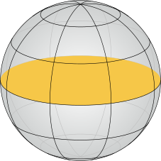

Free boundary minimal surfaces of genus zero
The critical catenoid is conjectured to be the unique embedded free boundary minimal surface with genus zero and two boundary components in the three-dimensional Euclidean unit ball. Even more challenging would be a rigorous classification of all embedded free boundary minimal surface with genus zero and more than two boundary components.
Free boundary minimal surfaces of genus zero with 3, 2 and 1 boundary components
Critical Catenoid

Equatorial Disc
area = π
area = π